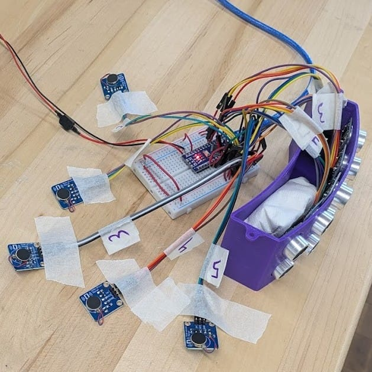

Sensing
Ultrasonic array
Five HC-SR04 sensors provide front, side, and rear coverage around the user.
Team project · Assistive technology
A wearable prototype using five ultrasonic sensors and dedicated vibration motors to communicate obstacle direction and distance.

01 · System design
Each ultrasonic sensor drives a dedicated vibration motor. The feedback pattern changes with distance, and adjacent sensors can generate a burst alert when they detect the same obstacle.
The repository documents three operating modes: continuous proximity feedback, change detection, and a radar-style pulse rate that increases as the obstacle gets closer.
02 · Hardware and control
Sensing
Five HC-SR04 sensors provide front, side, and rear coverage around the user.
Feedback
Motor intensity or pulse timing communicates proximity for the corresponding direction.
Mechanical design
SolidWorks was used to package the sensors and electronics into a headset prototype.
Software
The code handles distance measurement, operating modes, burst alerts, and serial debugging.
03 · Current status
The team repository includes a working codebase and hardware test videos. The project reached a functional prototype stage with sub-200 ms obstacle detection reported in the resume.
Documented next steps include non-blocking sensor scheduling, saved mode settings, a manual mode button, a compact PCB, and possible IMU integration.